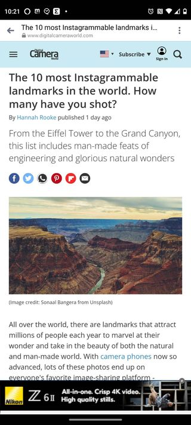
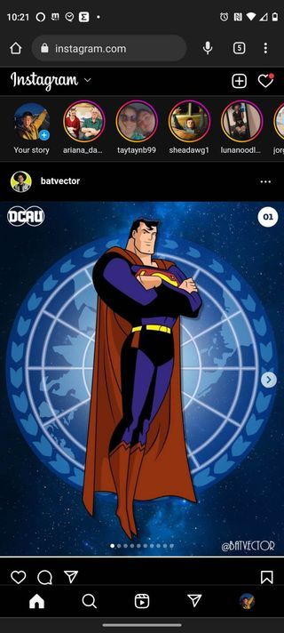

Visual Hierarchy
Mozilla: Visit Site

I chose this as an example of Visual Hierarchy because the way it is formatted makes it easy to tell what to look at and when to look at it. This is done by having what is on top be the larger heading and further down on the page the smaller text. In that type of progression, common conventions tell the brain that what is about to be read builds on what was previously read.
Rule of Thirds
Digital Camera World: Visit Site
I chose this site as an example of the Rule of Thirds because the rule of thirds is used to structure the content in a way that is naturally pleasing to the brain. In the mobile version, the content is broken up into three sections, going top to bottom. This is not only true in the example I displayed, but were one to keep scrolling they would find that to be the case throughout the article.
White Space & Clean Design
Instagram: Visit Site
The example I have chosen to use for white space and clean design is a site that likley everyone is familiar with. Instagram uses white space to clearly separate when certain elements stop and when the next element begins.